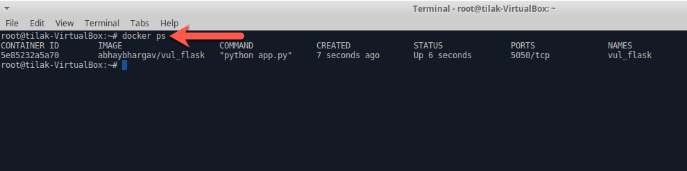
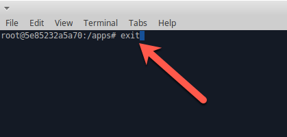
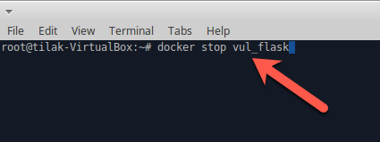
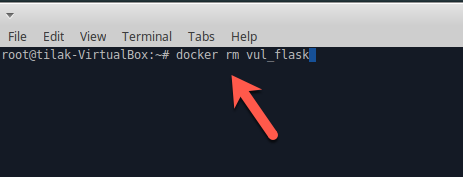
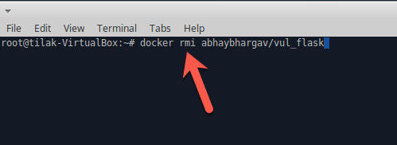

Docker Hands-On Part-1
- Open terminal

Download docker image from Docker Hub
docker pull abhaybhargav/vul_flask
View list of docker images
docker pull abhaybhargav/vul_flask
Start docker container
docker run -d --name vul_flask abhaybhargav/vul_flask
List of running containers
docker ps
Exec into a container
docker exec -it vul_flask bash
Exit from the container
exit
List of running containers
docker ps
Stop running container
docker stop vul_flask
List of all containers including stopped and running containers
docker ps -a
Remove Stopped container
docker rm vul_flask
Remove docker image
docker rmi abhaybhargav/vul_flask